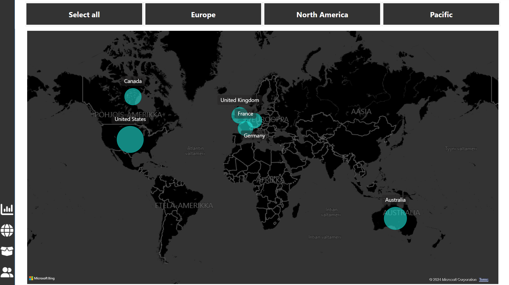
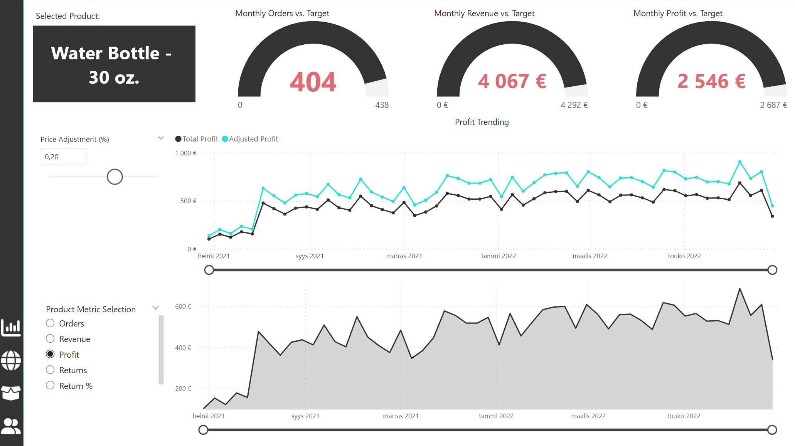
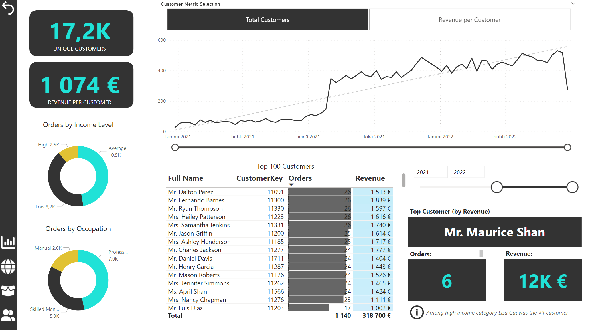

Hi! I'm a 23-year-old Industrial Engineer & Management student with a passion for data.
This portfolio highlights my favorite projects, showcasing my skills in SQL, Python, Power BI and Tableau.
My work is driven by values of creativity, collaboration, continous development and transparency.
Have a nice visit on the site and if you're interested in connecting, my contact information is below!
Adventure Works is a global bike shop selling bikes, clothing and accessories. This project contains a comprehensive dashboard divided into four main sections: Executive Dashboard, Map, Product Detail, and Customer Detail...
The Executive Dashboard provides a quick overview of the company's performance through KPI cards, line charts, category selections, top products, and monthly trends, offering crucial insights at a glance for the executive team.

The Map section visualizes the distribution of orders across different countries and continents, enabling users to understand geographical sales patterns and market penetration.

The Product Detail section allows for an in-depth analysis of specific products. These products can be selected from the Executive section using a Drill Through feature, enabling users to explore detailed metrics and performance indicators for individual items.

Lastly, the Customer Detail section delivers valuable information about customer demographics, order quantities, and revenue. It features extensive filtering options, allowing for a nuanced examination of customer behavior and preferences.
This Project was made during Udemy Course "Microsoft Power BI Desktop for Business Intelligence".
Download the full Power BI file from my GitHub to see it in full action!
A web scraper created with Jupyter Notebook | Fetches the price of an iPhone from Amazon and updates the price in a CSV table | Also has the capability to send an email notification of a price drop.
The objective of the project was to showcase personal skills in SQL language, which I wrote in SQL Server Management Studio (SSMS). Various statistics of EV's
This project cleans and standardizes a Nashville Housing dataset in SQL, addressing issues like date formats, missing addresses, and duplicate records for enhanced data analysis.
This project explores COVID-19 impact through SQL analysis, focusing on case-to-death ratios, infection rates, and vaccination progress across regions.